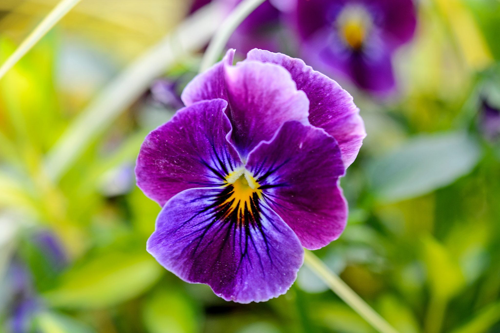

Violet
Violets are charming perennial plants known for their delicate, colorful flowers and heart-shaped leaves. They belong to the Viola genus and are native to various regions around the world. Violets are versatile plants that can be grown in gardens, containers, and even indoors as houseplants. Here's a comprehensive guide on violets, including their types, planting procedure, and care.
Types of Sunflowers:
- Common Blue Violet (Viola sororia): Native to North America, the common blue violet produces charming blue-purple flowers with yellow centers. It has heart-shaped leaves and spreads readily via rhizomes, forming dense ground covers.
- Sweet Violet (Viola odorata): Known for its highly fragrant, purple-blue flowers that bloom in early spring. The flowers are often used in perfumery and culinary applications.
- Bird's Foot Violet (Viola pedata): Native to North America, bird's foot violet features unique flowers with finely divided petals, resembling a bird's foot. Flowers can be purple, blue, or white, and the plant forms clumps of finely cut foliage.
- Johnny Jump Up (Viola tricolor): Also known as heartsease or wild pansy, Johnny jump up produces small, cheerful flowers with purple, yellow, and white markings. It readily self-seeds and naturalizes in gardens, often appearing in unexpected places.
What to do and what not to do
- Planting Procedure:
- Spring or Fall: Plant violets in spring or fall when the weather is cool and the soil is moist. Avoid planting during extreme heat or cold.
- Sunlight: Violets prefer partial shade to full shade, especially in regions with hot summers. They can tolerate some morning sun but prefer afternoon shade.
- Soil: Violets thrive in well-drained, moist, and fertile soil with a slightly acidic to neutral pH. Incorporate organic matter such as compost or leaf mold to improve soil texture and fertility.
Weather in Kathmandu
Temperature: °C
Humidity: %
Condition:
Date & Time: